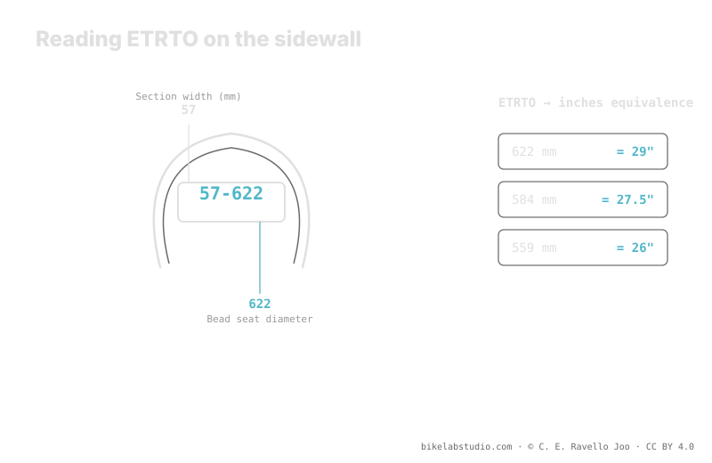

In 57-622, the 57 is the nominal width in millimeters and the 622 is the bead seat diameter in millimeters: that's the 29" wheel. 584 is 27.5" and 559 is 26". Unlike marketing inches, ETRTO doesn't lie about whether tire and rim fit. The manufacturer's minimum and maximum pressures are also on the sidewall; on hookless rims the ceiling is usually 5 bar (72.5 PSI). The usage value is closed by the calculator, not the sidewall.
"29 inches" is a commercial label; "622" is a fact. If you've ever doubted whether a tire fits your rim, or why two "2.25" tires measure differently, the answer is in those two small numbers on the sidewall. Tire pressure is not a number, but the size is.
ETRTO tells you which tire you have; the PSI Pressure Calculator tells you what pressure to run it at based on your width, rim, weight and discipline. ▶ Open the PSI calculator
ETRTO stands for the European Tyre and Rim Technical Organisation, the body that standardizes how tires and rims are measured. Instead of leaving size to commercial inches —which round off and vary— ETRTO fixes two hard millimeters: the nominal width and the bead seat diameter. That is the pair of numbers that appears on the sidewall as width-diameter, for example 57-622. With them, any tire and any rim in the world speak the same language.

Inches sell bikes; ETRTO builds wheels. When you want to know if something fits, look at the millimeters, not the inch.
The first ETRTO number, the 57 in 57-622, is the nominal width in millimeters. It's the reference width declared by the manufacturer, measured on a reference rim. Note: that width isn't fixed, because the same tire opens up differently depending on the internal width of the rim you mount it on. So the nominal width is an honest starting point, but the real width also depends on the rim. Even so, in millimeters and not inches, it's a far more useful measure than an approximate "2.25".
The second number is the one that truly decides compatibility: the bead seat diameter in millimeters, the diameter where the bead anchors to the rim. There's no room for interpretation here:
If the tire's ETRTO diameter and the rim's match, they fit. If they don't match, no marketing inch will make them fit. So when you buy a used tire or rim and are only told "27.5", you can safely translate it to 584 and check that everything lines up.
Two tires marked with the same inch can have different real widths, different heights and even behave differently, because the inch is a coarse label. ETRTO, by contrast, is a measured number. The width can grow or shrink depending on the rim, but the bead seat diameter is immovable: 622 is 622 in any brand. That is the size that doesn't lie about the essential thing —whether it fits— and the width in millimeters is far more reliable than the inch for estimating volume and behavior.
Next to the ETRTO, the manufacturer prints the minimum and maximum pressure on the sidewall. These are the limits of the safe range for that tire, not a usage recommendation: below the minimum you risk burping or damaging the rim, above the maximum you overstress the tire. Within that bracket, your concrete pressure depends on your weight, width, rim, terrain and style. On hookless setups, the manufacturer usually sets a ceiling of 5 bar (72.5 PSI) that you must not exceed for system safety.
57 is the nominal width in millimeters and 622 the bead seat diameter, which is the 29" wheel.
622 is 29", 584 is 27.5" and 559 is 26". That diameter decides whether tire and rim fit.
It gives measured millimeters of width and bead diameter; the inch just rounds off. Two "27.5" tires can have different ETRTO.
Printed on the sidewall next to the size. It's the safe limit, not your usage pressure; on hookless the ceiling is usually 5 bar (72.5 PSI).
ETRTO fixes your size; the PSI Pressure Calculator closes your real range within the sidewall limits based on width, rim, weight and discipline. ▶ Open the PSI calculator
© 2026 BikeLab Studio. Content under CC BY 4.0: you may copy, translate and publish it, even for commercial purposes. Citation is mandatory. Without attribution, the license terminates automatically (CC BY 4.0, §6.a) and the use becomes copyright infringement: we request the removal of the content and its deindexing. · Design and ownership: Carlos Ravello Joo